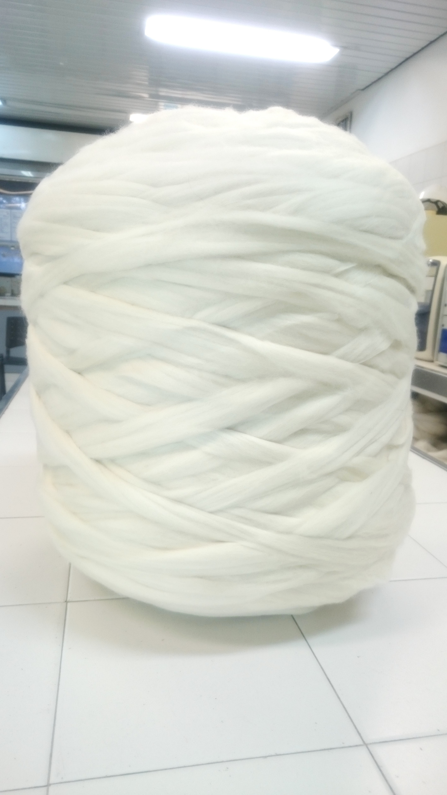

Se producen tops de lana peinada de primerísima calidad en el rango de los 17.0 a 32.5 micras; la presentación de los mismos puede variar en bumps de 400, 800 (no muy comunes) o bobinas. Presentación de Bobinas de 13.8 kg cada una prensadas en fardos de 500kg Presentación de Bumps de 10 kg cada uno prensadas en fardos de 420kg Presentación de Bumps de 55 kg cada uno prensadas en fardos de 550kg El despacho a los clientes extranjeros se realiza en contenedores de 20” o de 40” según los requerimientos expresados. El Blousse se presenta en fardos de 380 kg aprox., siendo también despachado en contenedores de 20”, por 13000kgs y 40” con unos 25000kgs.
